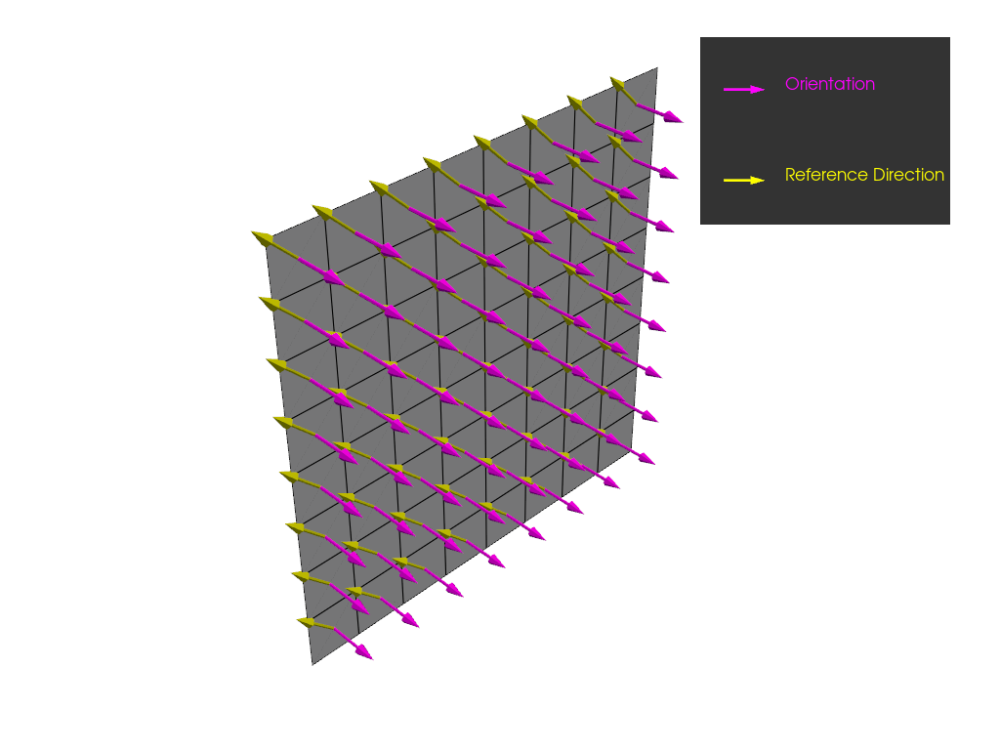
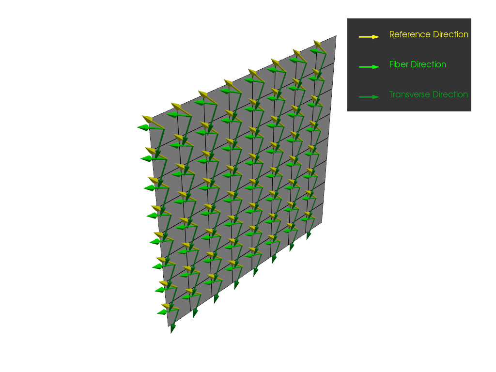
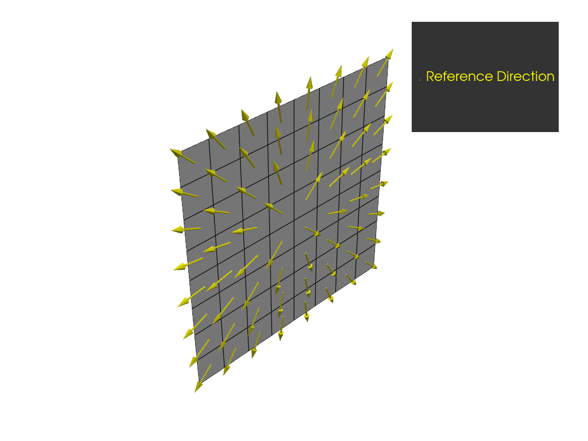
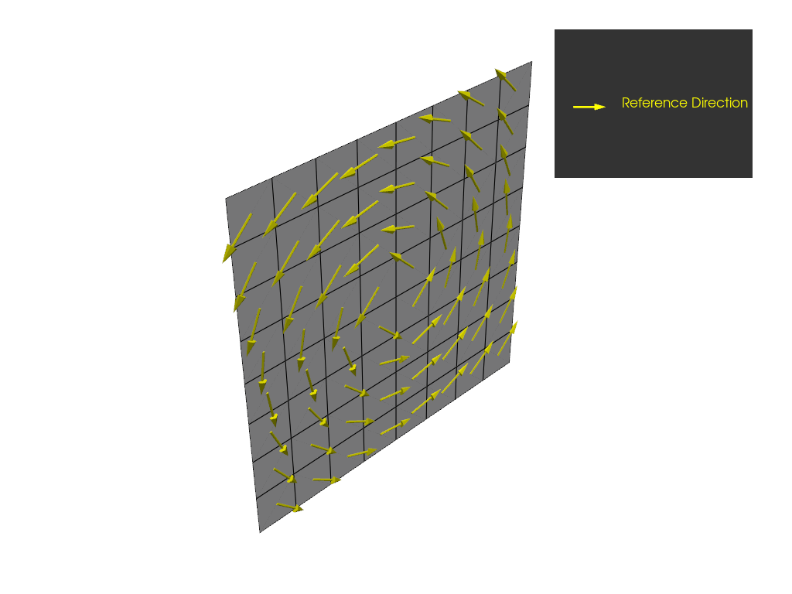
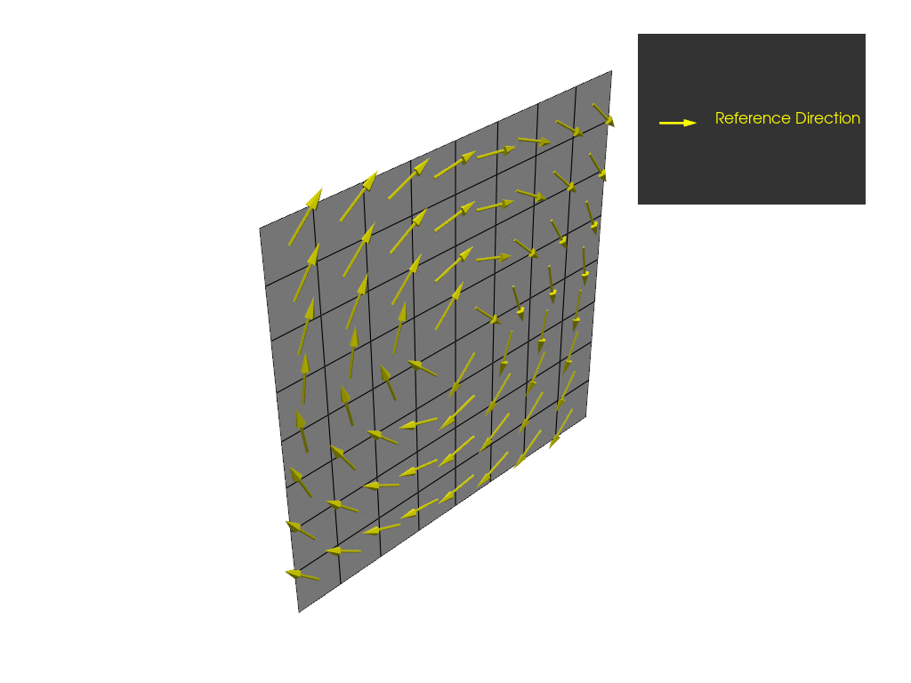
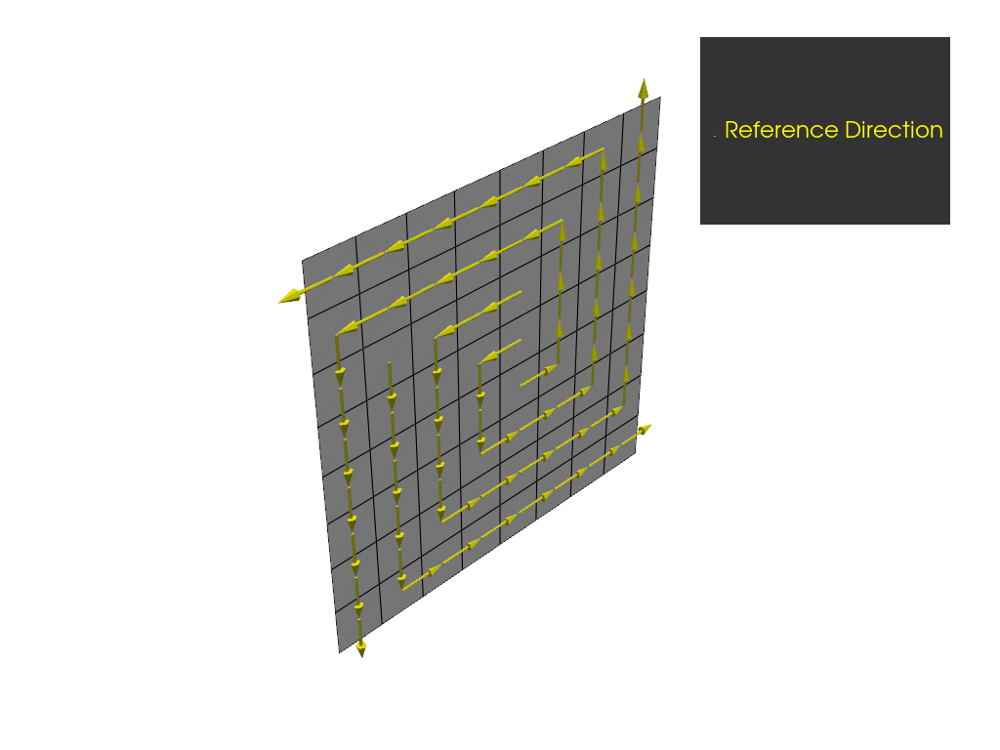
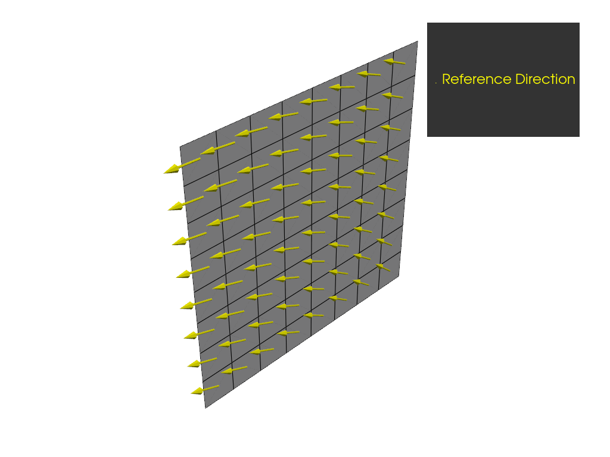

Note
Go to the end to download the full example code.
Rosette example#
This example illustrates how you can use rosettes to define the reference directions of a ply. It only shows the PyACP part of the setup. For a complete composite analysis, see Basic PyACP workflow example.
Import modules#
Import the standard library and third-party dependencies.
import pathlib
import tempfile
import numpy as np
Import the PyACP dependencies.
from ansys.acp.core import (
ACPWorkflow,
EdgeSetType,
PlyType,
RosetteSelectionMethod,
RosetteType,
get_directions_plotter,
launch_acp,
)
from ansys.acp.core.example_helpers import ExampleKeys, get_example_file
Start ACP and load the model#
Get the example file from the server.
tempdir = tempfile.TemporaryDirectory()
WORKING_DIR = pathlib.Path(tempdir.name)
input_file = get_example_file(ExampleKeys.BASIC_FLAT_PLATE_DAT, WORKING_DIR)
Launch the PyACP server and connect to it.
acp = launch_acp()
Define the input file and instantiate an ACPWorkflow instance.
The ACPWorkflow class provides convenience methods that simplify file handling.
It automatically creates a model based on the input file.
This example’s input file contains a flat plate with a single ply.
workflow = ACPWorkflow.from_cdb_or_dat_file(
acp=acp,
cdb_or_dat_file_path=input_file,
local_working_directory=WORKING_DIR,
)
model = workflow.model
print(workflow.working_directory.path)
print(model.unit_system)
/tmp/tmp1y4mldyy
mks
Define directions with a parallel rosette#
Create a material and fabric.
ud_material = model.create_material(
name="UD",
ply_type=PlyType.REGULAR,
)
fabric = model.create_fabric(name="UD", material=ud_material, thickness=0.1)
Create a parallel rosette where the first direction is rotated by 45 degrees around the y axis.
Create an oriented selection set (OSS) and assign the rosette.
oss = model.create_oriented_selection_set(
name="oss",
orientation_point=(0.0, 0.0, 0.0),
orientation_direction=(0.0, 1.0, 0),
element_sets=[model.element_sets["All_Elements"]],
rosettes=[parallel_rosette_45_deg],
)
model.update()
Plot the orientation and reference directions of the OSS.
plotter = get_directions_plotter(
model=model, components=[oss.elemental_data.orientation, oss.elemental_data.reference_direction]
)
plotter.show()

Create a ply that uses the reference directions defined by the rosette. The ply angle is set to 20 degrees, which means that the fiber direction is rotated by 20 degrees from the reference direction.
modeling_group = model.create_modeling_group(name="modeling_group")
modeling_ply = modeling_group.create_modeling_ply(
name="ply",
ply_angle=20,
ply_material=fabric,
oriented_selection_sets=[oss],
)
Plot the reference directions, fiber directions, and transverse directions of the ply.
plotter = get_directions_plotter(
model=model,
components=[
modeling_ply.elemental_data.reference_direction,
modeling_ply.elemental_data.fiber_direction,
modeling_ply.elemental_data.transverse_direction,
],
)
plotter.show()

Define directions with a radial rosette#
Create a radial rosette and plot the resulting reference directions.
For a radial rosette, a line is constructed that goes through the origin. Its
direction vector is normal to a plane spanned by dir1 and dir2.
Therefore, the reference directions are parallel to the shortest connection from the line to
each point for which it is computed.
radial_rosette = model.create_rosette(
name="RadialRosette",
rosette_type=RosetteType.RADIAL,
origin=(0.005, 0, 0.005),
dir1=(1, 0, 0),
dir2=(0, 0, 1),
)
oss.rosettes = [radial_rosette]
model.update()
plotter = get_directions_plotter(model=model, components=[oss.elemental_data.reference_direction])
plotter.show()

Define directions with a cylindrical rosette#
Create a cylindrical rosette and plot the resulting reference directions.
For a cylindrical rosette, the reference directions are tangential to the circles around the origin
that lie in a plane spanned by dir1 and dir2.
cylindrical_rosette = model.create_rosette(
name="CylindricalRosette",
rosette_type=RosetteType.CYLINDRICAL,
origin=(0.005, 0, 0.005),
dir1=(1, 0, 0),
dir2=(0, 0, 1),
)
oss.rosettes = [cylindrical_rosette]
model.update()
plotter = get_directions_plotter(model=model, components=[oss.elemental_data.reference_direction])
plotter.show()

Define directions with a spherical rosette#
Create a spherical rosette and plot the resulting reference directions. For a spherical rosette, the reference directions are tangential to a sphere around the origin. Note that for this example, the reference directions of the spherical rosette are the same as those of the cylindrical rosette.
spherical_rosette = model.create_rosette(
name="SphericalRosette",
rosette_type=RosetteType.SPHERICAL,
origin=(0.005, 0, 0.005),
dir1=(1, 0, 0),
dir2=(0, 0, 1),
)
oss.rosettes = [spherical_rosette]
model.update()
plotter = get_directions_plotter(model=model, components=[oss.elemental_data.reference_direction])
plotter.show()

Define directions with an edge-wise rosette#
Create an edge-wise rosette and plot the resulting reference directions.
The reference directions are given by a projection of dir1
and the path of the edge set. dir1 of the rosette is projected onto the point
on the edge that is closest to the rosette’s origin. This determines the reference directions
along the edge set.
You can reverse the reference directions by inverting dir1.
An element within an OSS gets its reference directions from the direction
of the point on the edge that is closest to the element centroid.
Create the edge set from the “All_Elements” element set. Because you assigned 120 degrees to the limit angle, all the edges are selected.
edge_set = model.create_edge_set(
name="edge_set",
edge_set_type=EdgeSetType.BY_REFERENCE,
limit_angle=120,
element_set=model.element_sets["All_Elements"],
origin=(0, 0, 0),
)
edge_wise_rosette = model.create_rosette(
name="EdgeWiseRosette",
rosette_type=RosetteType.EDGE_WISE,
edge_set=edge_set,
origin=(0.005, 0, 0.005),
dir1=(1, 0, 0),
dir2=(0, 0, 1),
)
oss.rosettes = [edge_wise_rosette]
model.update()
plotter = get_directions_plotter(model=model, components=[oss.elemental_data.reference_direction])
plotter.show()

Combine rosettes#
Create an additional parallel rosette that points along the x direction and has its origin
at (0.01, 0, 0.01).
parallel_rosette_0_deg = model.create_rosette(
name="ParallelRosette",
rosette_type=RosetteType.PARALLEL,
origin=(0.01, 0, 0.01),
dir1=(1, 0, 0),
dir2=(0, 0, 1),
)
Assign both rosettes to the OSS and set the rosette selection method to
RosetteSelectionMethod.MINIMUM_DISTANCE_SUPERPOSED. This implies that the reference directions
are weighted by the inverse distance to each rosette. Note that the origin of
the rotated rosette is at (0,0,0).
oss.rosettes = [parallel_rosette_45_deg, parallel_rosette_0_deg]
oss.rosette_selection_method = RosetteSelectionMethod.MINIMUM_DISTANCE_SUPERPOSED
Plot the resulting reference directions.
model.update()
plotter = get_directions_plotter(model=model, components=[oss.elemental_data.reference_direction])
plotter.show()

Total running time of the script: (0 minutes 4.603 seconds)